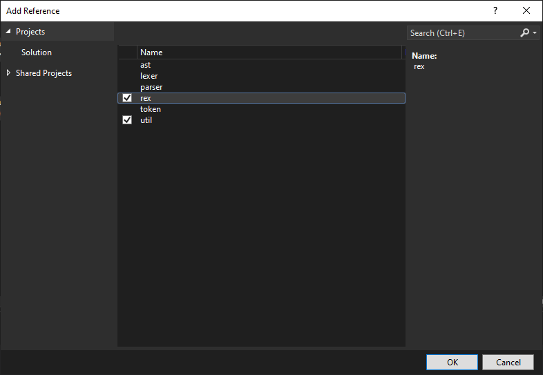

2.2 Using Soul Regular Expression Library
2.2.1 Creating a Project
To create a project that uses the Soul regular expression library:
-
Create a Soul-compatible project as described in this
document.
- Right-click the solution in the Solution Explorer and select 'Add | Existing Project...'
-
Navigate to the C:\soul-4.0.0\soul\ast
folder and add the ast.vcxproj
to the solution.
-
Do the same for
-
C:\soul-4.0.0\soul\lexer
,
-
C:\soul-4.0.0\soul\parser
,
-
C:\soul-4.0.0\soul\token
,
-
C:\soul-4.0.0\util
,
-
C:\soul-4.0.0\soul\rex
,
projects.
2.2.2 Example
I have created an example program that uses the regular expression component:
import std.core;
import std.filesystem;
import util;
import soul.rex;
int main()
{
try
{
util::Init();
soul::rex::context::Context context;
soul::rex::nfa::Nfa nfa = soul::rex::CompileFilePattern(context, "*.xml");
for (const auto& entry : std::filesystem::directory_iterator{ "C:/soul-4.0.0/soul/xml/xml_test_data" })
{
if (entry.is_regular_file())
{
std::string fileName = entry.path().filename().generic_string();
if (soul::rex::PatternMatch(fileName, nfa))
{
std::cout << fileName << std::endl;
}
}
}
}
catch (const std::exception& ex)
{
std::cerr << ex.what() << std::endl;
return 1;
}
util::Done();
return 0;
}
2.2.3 Adding References
To add references to the required modules to your project:
- Expand your project in the Solution Explorer
- Right-click 'References' and select 'Add Reference...'
-
Add references to the following modules:

2.2.4 Adding Lexer Resource Files
To add required lexer resource files to your project:
- Right-click your project in the Solution Explorer
- Select 'Add | Existing Item...'
-
Navigate to the C:\soul-4.0.0\rc
folder and add the soul.rex.lexer.classmap.rc
file to your project.
2.2.5 Compiling the Solution
-
Select the 64 | Debug
configuration.
-
Select the Build | Build Solution
command.
- The required Soul libraries and then your project should compile successfully.
-
Select the 64 | Release
configuration
-
Select the Build | Build Solution
command.
- The required Soul libraries and then your project should compile successfully.